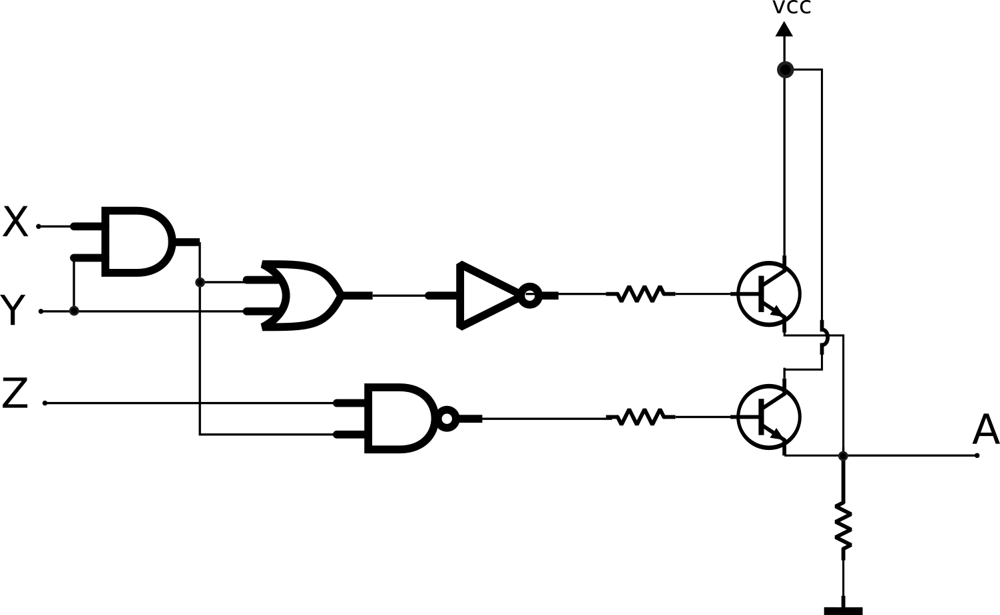

Lab 4: FPGA - VHDL¶
| Material de estudos |
|---|
| https://insper.github.io/Z01.1/Teoria-Componentes/ |
| https://insper.github.io/Z01.1/VHDL-basico/ |
| https://insper.github.io/Z01.1/VHDL-Combinacional/ |
Trabalhando
-
 Usar o Linux fornecido.
Usar o Linux fornecido. -
Esse laboratório é para ser realizado individualmente. Ficar conectado no canal do grupo para discutir com os colegas.
Este laboratório é introdutório para o desenvolvimento do projeto (B-Lógica-Combinacional), onde iremos criar componentes de hardware que serão os alicerces do nosso computador. Primeiro precisamos praticar um pouco de VHDL e entender a ferramenta e o fluxo de compilação, teste e programação (Quartus).
Após essa etapa, iremos começar o desenvolvimento do projeto, programando os módulos que virão a ser utilizados no computador Z01 (próximo lab).
Antes de começar¶
Executar os comandos:
$ sudo apt install ghdl gtkwave
$ pip install cocotb
para instalar o simulador GHDL e a library cocotb para os testes a serem realizados através de script.
Entendendo a estrutura de pastas dos projetos¶
A pasta do projeto B-LogicaCombinacional no repositório Z01 possui a seguinte estrutura (assim como todos os demais projetos):
/B-LogicaCombinacional
testeLogicaCombinacional.py
/Quartus
/src
*.vhd
config_testes.txt
/testes
*.vhd
Quartus: Projeto Quartus que faz uso dos arquivos VHDL localizados emsrc/rtl/*.vhd- Serve para programar a FPGA
*.py: Scripts em python automatiza a execução dos testessrc/*.vhd: Arquivos VHDL que serão implementado pelo grupoconfig_testes.txt: Configuração dos testestestes/*.vhd: Arquivos VHDL que realizam teste lógico nos arquivos do rtl
Abrindo o Quartus¶
Abra o software do Quartus  e clique em
e clique em File 
Open Project escolha o projeto localizado na pasta B-LogicaCombinacional/Quartus. O arquivo que o Quartus irá reconhecer é o: DE0_CV_Default.qpf como no gif a seguir:
Tip
Se não encontrar o software na barra de tarefas abra o terminal e escreva quartus enter.

Abra o arquivo TopLevel.vhd como demonstrado no gif anterior, este arquivo é o que chamamos de top level (pode-se fazer uma analogia com o main de um código), ele será o primeiro a ser executado na compilação e utilizará os demais módulos do sistema.
Compilando o código¶
Note
O código original disponível não realiza nenhuma lógica, repare que sua arquitetura está vazia!
Para compilarmos esse código VHDL basta irmos em: Processing Start Compilation. A ferramenta irá "realizar" o código, ou seja, interpretar e torna-lo um hardware.

RTL View¶
Podemos gerar a visão RTL do código em vhdl, esse diagrama é a interpretação do código em VHDL pelo compilador e como ele seria supostamente implementando em hardware. Para isso:
Tools Netlist Viewers RTL viewer
Ele irá gerar o diagrama a seguir:
Onde podemos analisar que não existe nenhuma lógica que relaciona entrada com saída.
RTL
O RTL aqui tem outro significado de quando foi utilizado com transistores, aqui é Register-transfer level e nos transistores é Resistor–transistor logic.
Info
SW = Switchs = Chaves da placa
Tip
Iremos utilizar bastante o RTL, aprenda a gerar e a interpretar!
Modificando o projeto¶
Vamos modificar o arquivo toplevel.vhd do projeto para que o bit 0 do vetor LEDR seja igual ao bit 0 da chave SW, a arquitetura deve ficar como a seguir:
---------------
-- implementacao
---------------
begin
LEDR(0) <= SW(0);
end rtl;
Tarefa
- Edite o toplevel
- Compile
- Gere o RTL Viewer novamente
O resultado deve ser o seguinte:
Onde o valor do LEDR0 será o próprio valor de entrada chave SW0.
"Programando a FPGA"¶

Para programar a FPGA você deve:
- Conectar a placa via USB (não precisa da fonte)
- Ligar a placa (botão vermelho)
- Verificar se a chave SW10 está em 'run'
No quartus vá em Tools Programmer. Ele deve abrir uma nova interface:

Mexa na chave SW0 e note que o LED irá acender conforme a chave é colocada na posição on.
Exercícios¶
Para cada desafio proposto a seguir, verifique se o RTL corresponde a lógica que deseja implementar.
- Compile
- Verifique o RTL
- Programe a FPGA
Tarefa
Faça a saída LEDR(0) ser o inverso da entrada SW(0)
Tarefa
Faça a saída LEDR(0) ser a entrada SW(0) ou SW(1)
Tarefa
Faça:
LEDR(0)ser a entradaSW(0) ou SW(1)LEDR(1)ser a chaveSW(1)
Tarefa
Faça TODOs os LEDs acenderem quando a seguinte combinação de entrada for:
SW9 SW0
1 0 0 1 1 0 1 0 1 0
Tarefa
Escreva um código VHDL para implementar o circuito a seguir:

Sendo:
- X: chave 0 (SW(0))
- y: chave 1 (SW(1))
- z: chave 2 (SW(2))
Dica: encontre a equação, implemente em VHDL.
Sete segmentos¶
Note que na nossa FPGA possuímos seis displays de sete segmentos.
Para termos acesso a esses displays, basta modificar a entidade do projeto para:
entity TopLevel is
port(
SW : in std_logic_vector(9 downto 0);
HEX0 : out std_logic_vector(6 downto 0); -- 7seg0
LEDR : out std_logic_vector(9 downto 0)
);
end entity;
Agora com um display de 7 segmentos mapeado como saída (out) na nossa entity podemos acionar cada led do display como descrito no manual da placa (isso só é possível pois o projeto já foi configurado corretamente antes pelo seu professor).

Tip
Para acender um segmento é necessário colocar 0 e para apagar 1.
Tarefa
- Modifique a
entitypara possuir a nova saída - Faça aparecer o número
5noHEX0.